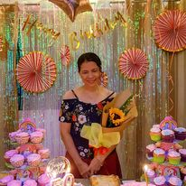
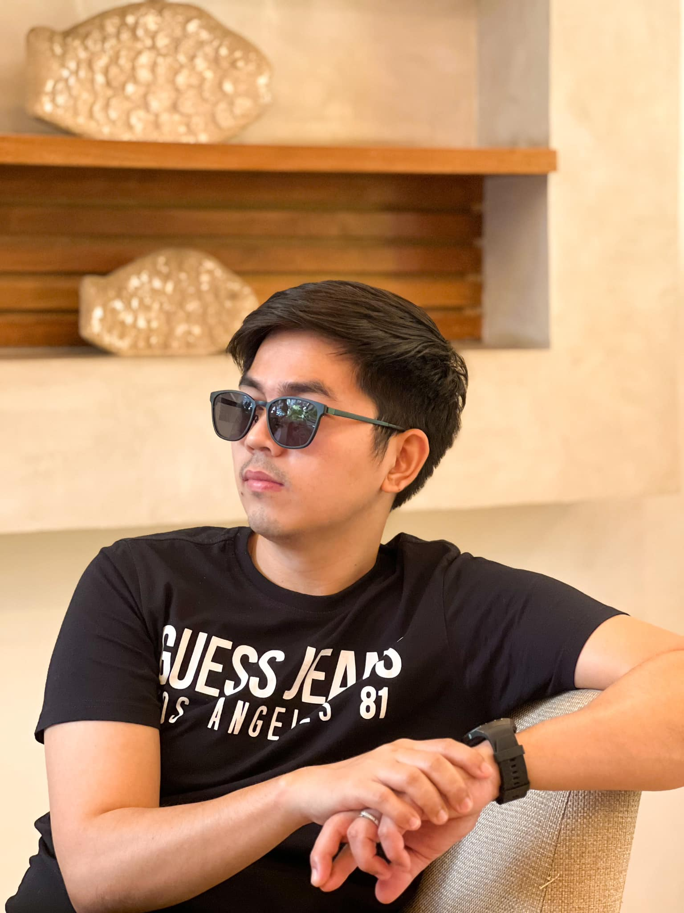
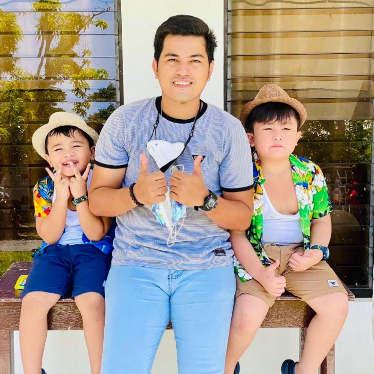
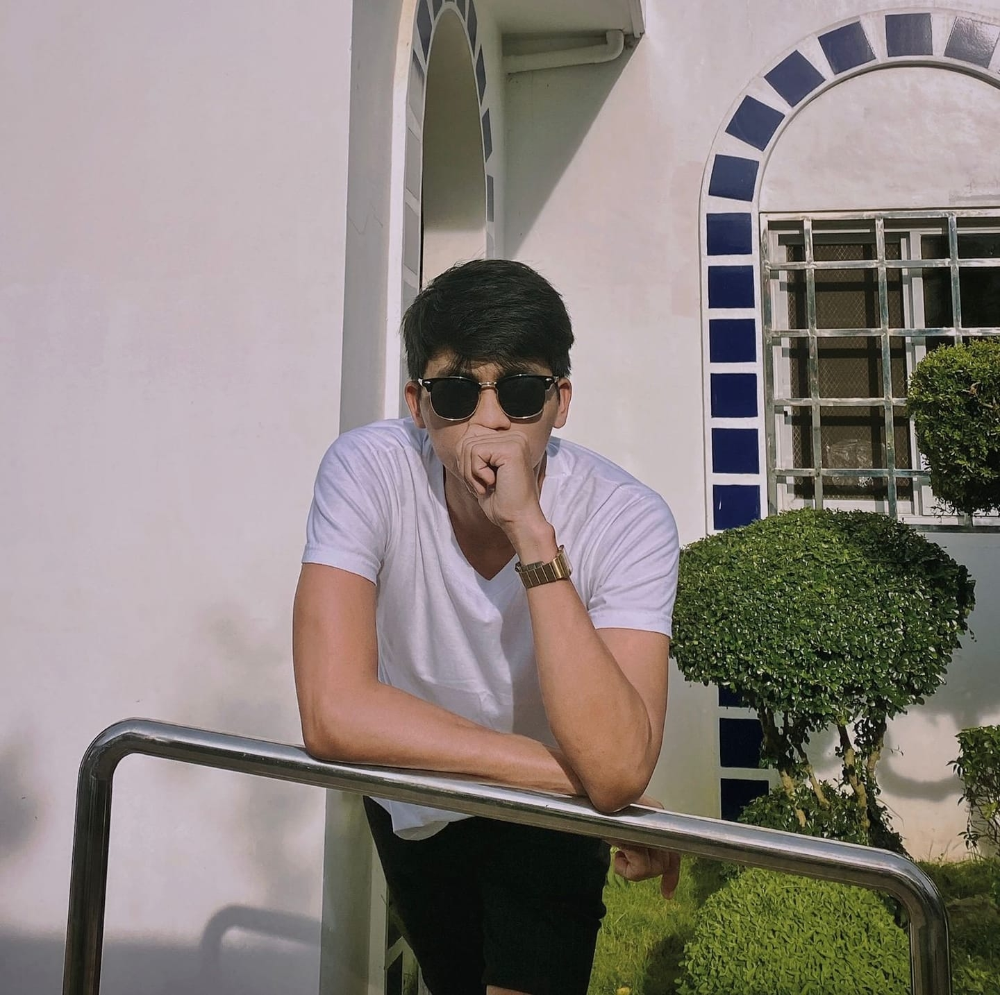

My Family
"Fathers are the pillars of strength, the steady hands that guide us through life's challenges. With wisdom and resilience, they provide a foundation of stability and protection. In their presence, we learn the values of integrity, determination, and compassion. A father's love is a powerful force that shapes our character and inspires us to reach new heights."
Rodelino Carmona
"Mothers are the embodiment of love, strength, and unwavering support. Their selfless devotion knows no bounds, their nurturing touch heals and uplifts. In their embrace, we find solace, in their wisdom, we find guidance. A mother's love is a beacon that lights our way, forever cherished, forever grateful."
Evelyn Carmona
"Brothers are not just born by blood, but also by the shared moments that shape our lives. They are the ones who stand by us, offering unwavering support, lending a helping hand, and bringing light to our darkest days. Brothers are the keepers of our secrets, the champions of our dreams, and the guardians of our hearts. In this journey called life, having a brother is a blessing that fills our days with love, laughter, and an unbreakable bond that withstands the test of time."
Mark Lyndon Carmona
"Brothers are not just born by blood, but also by the shared moments that shape our lives. They are the ones who stand by us, offering unwavering support, lending a helping hand, and bringing light to our darkest days. Brothers are the keepers of our secrets, the champions of our dreams, and the guardians of our hearts. In this journey called life, having a brother is a blessing that fills our days with love, laughter, and an unbreakable bond that withstands the test of time."
Mark Vincent Carmona
"Brothers are not just born by blood, but also by the shared moments that shape our lives. They are the ones who stand by us, offering unwavering support, lending a helping hand, and bringing light to our darkest days. Brothers are the keepers of our secrets, the champions of our dreams, and the guardians of our hearts. In this journey called life, having a brother is a blessing that fills our days with love, laughter, and an unbreakable bond that withstands the test of time."
